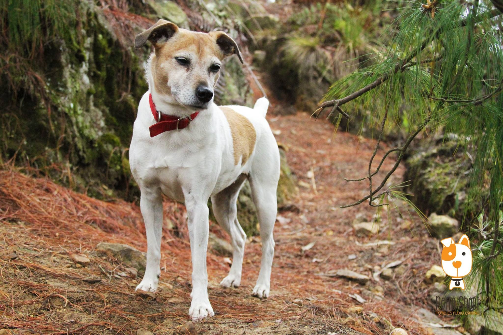

Apadrinar un animalito es una forma maravillosa de contribuir a su bienestar. Con tu apoyo, no solo le das amor y cuidados, sino que también ayudas a mejorar su calidad de vida. Al apadrinar, estás proporcionando los recursos necesarios para su alimentación, atención médica y mucho más. Cada gesto cuenta y hace una gran diferencia en la vida de nuestros peluditos.
Apadrinar Ahora